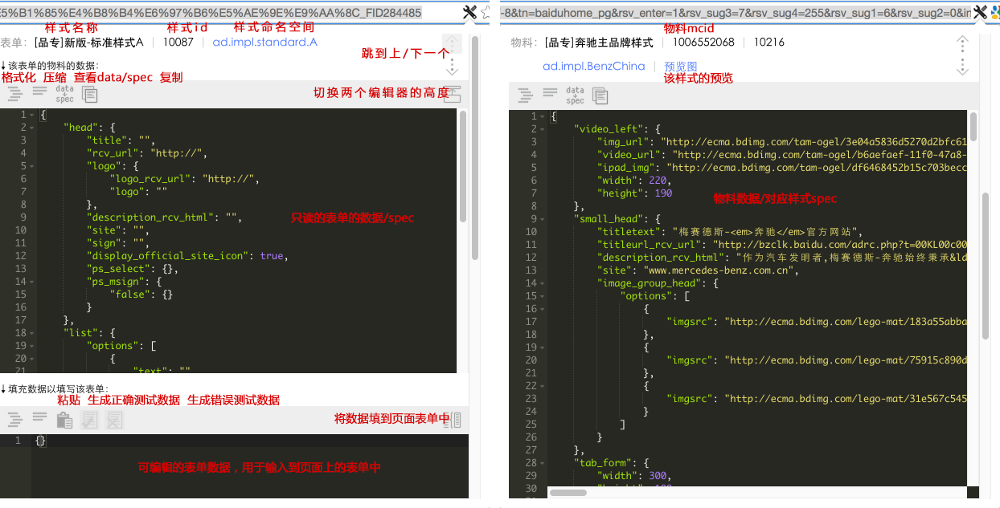

1. 插件使用
普通用户解读：可以把页面表单中的物料内容复制出来，也可以将物料内容设置到页面表单中去，不需要在页面上一个个输入框填写。适用于素材库做物料、锦囊做物料、实验平台做物料、各种奇葩业务端对接了素材库做物料，如果没看懂，咨询一下神奇的fe们 或者查看图解
资深用户解读：可以复制sdk输出的JSON数据，也可以把JSON设置到sdk表单中去，偷懒必备
2. 插件配置
设置插件有权限的url，逗号分隔，支持换行，支持字符串部分匹配和正则匹配（暂时全集为*.baidu.com）
意见反馈：chenli11@baidu.com